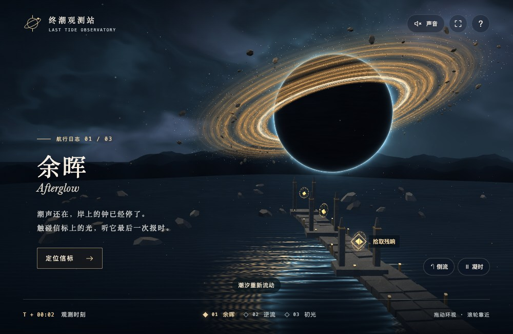
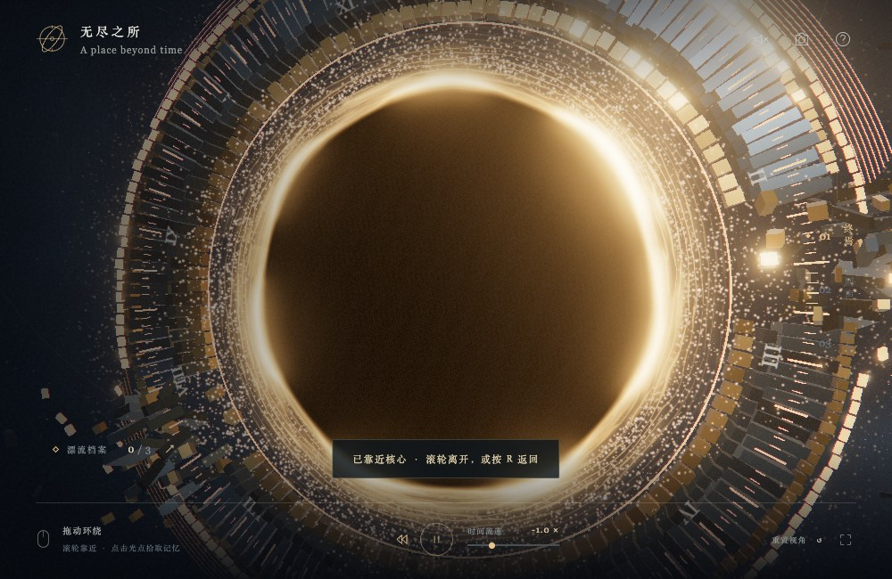
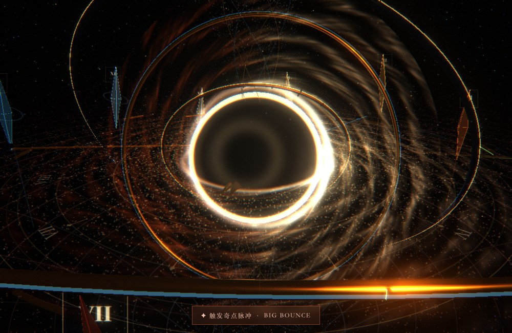

GPT-6-Astra
终潮观测站
拖动海面的视角，在第二章让潮汐倒流，第三章凝住时间，接住一束光。
试玩这个版本同一条提示词，三个模型各自构想的时间终点。选择一幅画面进入作品。

拖动海面的视角，在第二章让潮汐倒流，第三章凝住时间，接住一束光。
试玩这个版本
绕到断环背面，点击带光芒的漂流物拾取记忆。拖动时间滑块，观察星尘改变流向。
试玩这个版本
切换四个纪元，聚焦一座晶碑，再触发引力脉冲，观察星轨和仪表怎样响应。
试玩这个版本请使用Three.js创作一个主题为《时间的尽头》的3D交互式网页。
充分发挥你最顶级的审美、艺术设计和3D编程能力，在构图、光影、材质、粒子、动画和空间氛围上做到极致。画面需要有令人震撼的视觉表现力，并且可以通过鼠标自由交互。不限制你的创意和技术方案，尽可能展示你的能力上限。请直接完成开发、运行和测试，交付一个真正可玩的作品。
三份作品均取自 2026 年 11 月 11 日下午的创作记录，使用相同的首条提示词和 High 推理设置。两个 GPT 版本在 Codex 中创作，Gemini 版本在 Antigravity 中创作。后续对话和调试过程各有不同。